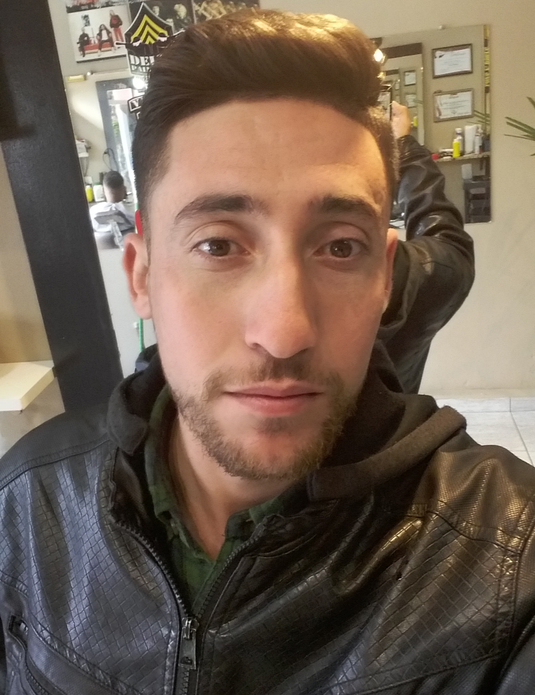

Otavio MoraesWeb Developer | Programador Java |
|---|
Resumo ProfissionalProfissional formado em Design Digital, atualmente cursando o técnico em análise e desenvolvimento de sistemas, com 9 anos de experiência e vivência em montagem de computadores, manutenção em hardware, Reparos em rede intranet, impressoras, Área de trabalho remota, Sistemas de PDV Consinco e Sistemas de Cartão TEF. Sólida experiência adquirida ao longo da carreira em empresas como Supermercados de Rede Varejista. Conhecimentos avançados em Microsoft Office, Pacote Adobe, Corel Draw, Lightroom HobbiesTocar Violão ou Viola | Praticar Motocross | Fotografar Livro PreferidoMil Cairão ao teu lado - Susi Hasel Mundy IdiomaInglês Avançado - Fly Away Idiomas |
 Nome: Otavio Messias de Moraes Idade: 26 Anos Nacionalidade: Brasileiro Estado Civil: Solteiro Telefone:(11)99404-3835 Endereço:Avenida Inocêncio Pires de Oliveira, 244 |
|---|